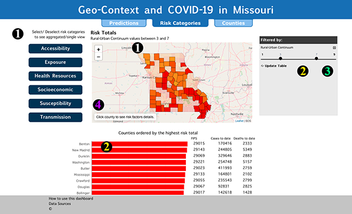

Select a dashboard to see guidelines
How to use Counties Dashboard
How to use Risk Categories Dashboard

How to use Predictions Dashboard
The risk categories dashboard allows users to explore aggregated total risk values of selected
risk categories.
1) Upon viewing the Risk Categories Dashbaord, all risk categories are selected. To de-select a risk category, click on corresponding button. Buttons of unselected categories will be light blue. When risk categories are selected, the sum of the total risk values per county is reflected on the map.
2) The table module consists of all counties ordered by the highest risk total. The bar chart reports the risk value total and the other columns report covid cases and deaths to date. When a filter is applied, this table can be updated by click the "update table" button and only counties that fall within the specified filter range, will appear.
3) To apply a filter, click on the drop down menu and select the desired filter. A range slider will appear with the min and max value of the filter. When the slider is updated, the counties that do not fall within the range will not be prominant on the map. The table module (2) will also update if the "update table" button is clicked.
4) Hover over a county to see more details. Click a county to see risk factor categories in detail.
1) Upon viewing the Risk Categories Dashbaord, all risk categories are selected. To de-select a risk category, click on corresponding button. Buttons of unselected categories will be light blue. When risk categories are selected, the sum of the total risk values per county is reflected on the map.
2) The table module consists of all counties ordered by the highest risk total. The bar chart reports the risk value total and the other columns report covid cases and deaths to date. When a filter is applied, this table can be updated by click the "update table" button and only counties that fall within the specified filter range, will appear.
3) To apply a filter, click on the drop down menu and select the desired filter. A range slider will appear with the min and max value of the filter. When the slider is updated, the counties that do not fall within the range will not be prominant on the map. The table module (2) will also update if the "update table" button is clicked.
4) Hover over a county to see more details. Click a county to see risk factor categories in detail.
The counties dashboard allows users to view risk category
factors and covid cases and deaths at the county level.
1) There are two ways a user can select a county: from the drop down menu clicking the county on the map.
2) To view factors of a risk category, click on the risk category button.
Bar chart module:
The risk factors will appear in the bar chart module on the right. Each bar displays the risk factor value of the selected county and how this value compares to the mean and max value of all MO counties. The colors of the bar represent what quantile the county value falls in.
Map:
To view a risk factor geospatially, click on the bar of the factor from the bar chart module.
3) The windrose plot reports the total risk factor value per category. To view the value, hover over the band.
4) Cases and Deaths are reported as weekly counts. Hover over the bars of the plot to see weekly counts.
5) Hover over a county to see more details.
6) This module displays an overview of the selected county.
1) There are two ways a user can select a county: from the drop down menu clicking the county on the map.
2) To view factors of a risk category, click on the risk category button.
Bar chart module:
The risk factors will appear in the bar chart module on the right. Each bar displays the risk factor value of the selected county and how this value compares to the mean and max value of all MO counties. The colors of the bar represent what quantile the county value falls in.
Map:
To view a risk factor geospatially, click on the bar of the factor from the bar chart module.
3) The windrose plot reports the total risk factor value per category. To view the value, hover over the band.
4) Cases and Deaths are reported as weekly counts. Hover over the bars of the plot to see weekly counts.
5) Hover over a county to see more details.
6) This module displays an overview of the selected county.